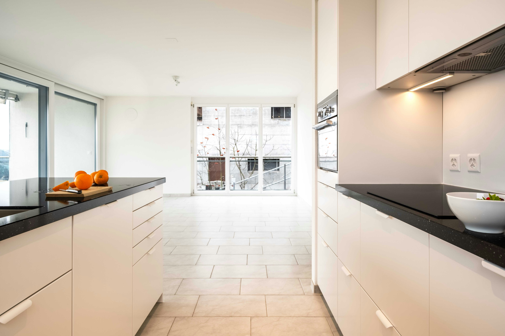
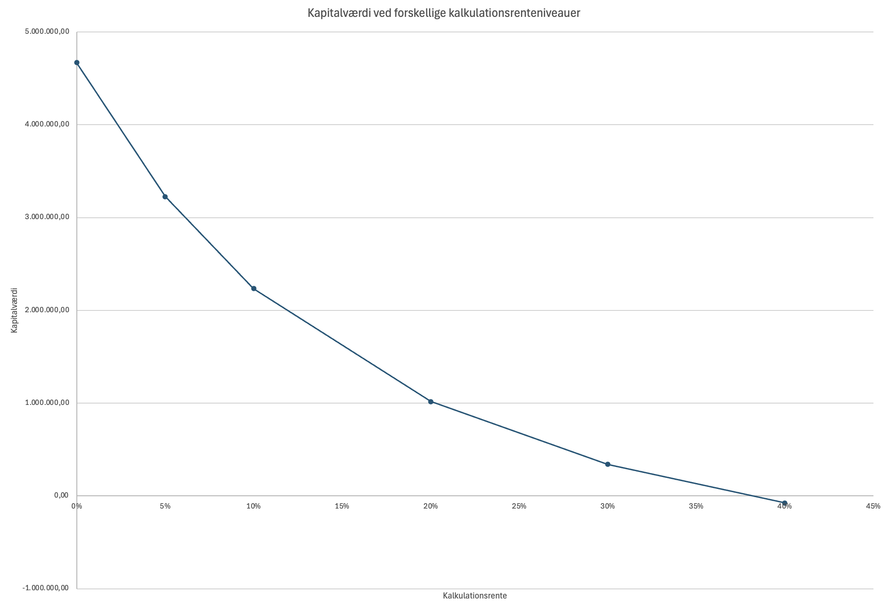

Temaprojekt 2 (OLA), del 2
Formål:
Formålet med temaprojektet er at give dig kompetence i at bruge, hvad ud har lært i
denne uge, i praksis.
Gnist:
Du skal nu lære, hvordan man anvender teori og værktøjer fra denne uge i
praksis, på en konkret virksomhed.
Beskrivelse:
I skal læse introen til temaprojektet herunder, før I går i gang med opgaverne.
OLA 2 Intro
Investeringscase: EDC Living Dragør overvejer udvidelse
Baggrund
Malene og Sam, der ejer EDC Living ApS, overvejer at
udvide deres forretning for at øge salget af ejerlejligheder. Virksomheden har
oplevet en positiv udvikling
med et overskud på 2.392.330 kr. i 2023 og en solid egenkapital på 2.532.864 kr.
pr. 31. december 2023.
Med den nuværende positive markedsudvikling inden for ejendomsmarkedet og
virksomhedens stærke økonomiske
fundament, overvejer ejerne at investere i åbningen af en ny butik i et
tilstødende område med højt
potentiale for salg af ejerlejligheder.
Investeringsoplysninger
- Forventet levetid for investeringen: 10 år
- Engangsudgift til markedsundersøgelse: 100.000 kr. (allerede
afholdt)
- Anslåede udgifter til indretning og møblering: 300.000 kr.
- Udgifter til ombygning af lejede lokaler: 450.000 kr.
- Depositum for lejemål: 200.000 kr.
- Indkøb af IT-udstyr og software: 150.000 kr.
- Marketing og lanceringsomkostninger: 250.000 kr.
- Rekruttering og oplæring af nyt personale: 180.000 kr.
- Årlig husleje for den nye butik: 360.000 kr.
- Forventede årlige personaleomkostninger for den nye butik: 1.800.000 kr.
- Andre årlige driftsomkostninger: 240.000 kr.
- Forventet antal årlige boligsalg fra den nye butik: 50
- Gennemsnitligt salær pr. boligsalg: 75.000 kr.
- Gennemsnitlige direkte omkostninger pr. salg (markedsføring, dokumenter,
osv.): 15.000 kr.
- Forventet scrapværdi efter 10 år: 200.000 kr.
- Virksomhedens kalkulationsrente: 10%
Afsender:
Et team af eksterne rådgivere, I er eksperter indenfor investering.
Modtager:
Direktionen i EDC Living, dvs. Malene Harrild og Sam Crabtree.
Man må ikke kontakte virksomheden, i forbindelse med dette projekt.
Bemærk spørgsmålene i denne case hænger tæt sammen, teamet bør overveje at være fælles
om
opgaverne.
App til Investering og finansiering
Opgave 1
Udgifter og indtægter
- Hvad bliver den initiale investering?
Vink: Husk sunk
costs
- Hvad bliver de årlige indtægter fra salg?
- Hvad bliver de årlige udgifter?
- Hvad bliver de årlige betalingstrømme?
- Hvad bliver scrapværdien?
Opgave 2
Nutidsværdier
- Hvad bliver nutidsværdien af den initiale investering?
- Hvad bliver nutidsværdien af betalingstrømmen fra år 1?
- Hvad bliver nutidsværdien af betalingstrømmen fra år 9?
- Hvad bliver nutidsværdien af betalingstrømmen fra år 10?
Opgave 3
Kapitalværdien
- Hvad bliver kapitalværdien?
- Hvad bliver kapitalværdien ved kalkulationsrente 0%?
- Hvad bliver kapitalværdien ved kalkulationsrente 5%?
- Hvad bliver kapitalværdien ved kalkulationsrente 20%?
- Hvad bliver kapitalværdien ved kalkulationsrente 30%?
- Hvad bliver kapitalværdien ved kalkulationsrente 40%?
-
Hvornår er kapitalværdien opgjort?
-
Hvornår er kapitalværdien generelt opgjort for investeringer?
Opgave 4
Kurve for kalkulationsrenter og kapitalværdier
-
Tegn en kurve i Excel ud fra en søjle med kalkulationsrenter og en søjle med
tilhørende
kapitalværdier fra forrige opgave.
Sæt gerne labels på akserne x-aksen er kalkulationsrenten og y-aksen er
kapitalværdierne.
Vink:

-
Forklar kort kurvens udseende
- Bør Edc Living foretage investeringen
Format
Teamet afleverer alle opgaver samt eventuel dokumentation i et samlet
word-dokument, med forside, indholdsfortegnelse, der overholder
metode-formalia.
Dokumentation for team-samarbejdet
indsættes som bilag i samme dokument.
Der skal således kun afleveres et samlet word-dokument i afleveringsmappen.
Omfang:
Samlet omfang skal maksimalt være 4 normalsider.